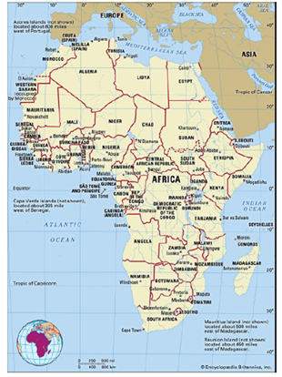

Africa, our continent!
 Africa is the second largest continent, spanning about one-fifth of the total land surface of the earth. It is bounded on the West by the Atlantic Ocean, the Mediterranean Sea on the North, the Red Sea and Indian Ocean on the East, and on the South by the mingling waters of the Atlantic and Indian Oceans. Africa has a total land mass of approximately 11,724,000 square miles (30,365,000 km²), and measures about 5,000 miles (8,000 km) from the north to south, and about 4,600 miles (7,400 km) from east to west.
Africa is divided almost equally in two by the equator, making most of the continent lying within the tropical region, which is bounded on the north by the Tropic of Cancer and on the south by the tropic of Capricorn. Due to the bulge formed by West Africa, the greater part of the continent’s territory lies north of the equator. Africa is said to be crossed from north to south by the prime meridian (0 degrees longitude), which passes a short distance to the east of Accra, Ghana. The continent is made up of 54 sovereign countries, with over 1000 official languages. Algeria is the largest African country by land area, while Nigeria is the largest by population. As at January 1, 2021, the United Nations estimates the population of Africa to be about 1.35 billion.
The Continent is endowed with an abundance of mineral resources, including some of the world’s largest reserves of fossil fuels, metallic ores, gems and precious metals. This is matched by a great diversity of biological resources, includes the intensely lush equatorial rainforests of Central Africa, and the world-famous wildlife of the eastern and southern sub-regions. Although agriculture still dominates the economies of many African countries, the exploitation of these resources in the 20th century has become the significant economic activity in Africa.
Africa is rising once again. The African horizon is growing brighter. Africa is on the march towards a more prosperous future in which all its citizens, of all creeds and backgrounds, are empowered to realize their full potential, and live with satisfaction and pride about their continent. Indeed, Africa is on the verge of a future with healthy, well educated people living in robust, inclusive, and sustainabily developed economies.
Africa's Future
a vibrant young population
With 60 percent of Africa’s population currently aged 24 and below, it is clear that Africa is a continent of young people. Acknowledging this fact, the leaders of the world decided to give a priority to the young population. This is translated into both the Agenda 2063 of the African Union, and the Agenda 2030 of the United Nations.
The responsibility to build this continent rests with each and every African citizen, especially young leaders at the continental level, and within our countries; responsibility to ensure that decision makers adequately put priority where it is needed. Thus, there is an emphatic call on governments in Africa to transform education and skills development, health and well being, empowerment, employment and entrepreneurship, which lie at the heart of the march of Africa towards progress, sustainable peace and development.
Sources:
African Union Commission Directorate on Information and Communication (2017). Harnessing the demographic dividend through investments in youth, AUEcho, Issue1. Ethiopia: African Union Commission. Retrieved from https://au.int/sites/default/files/documents/32665-doc-au-echo-magazine-2017-23june17-1.pdf
Kwamina Busumafi Dickson et al (n.d). Africa Continent. Retrived January 1, 2021 from https://www.britannica.com/place/Africa
MoAfrika Tours. (2020). How many countries are in Africa? 54 in short. Retrieved January 1, 2021 form https://moafrikatours.com/how-many-countries-are-in-Africa
Worldometer. (n.d). Population of Africa (2021). Retrieved January 1, 2021 from https://www.worldometers.info/world-population/africa-population/
Need more info?
Don't hesitate to reach out
Our Vision
We envision a united, peaceful, inclusive, and sustainably prosperous Africa, driven by the joint transformational efforts of Africans, across generations.